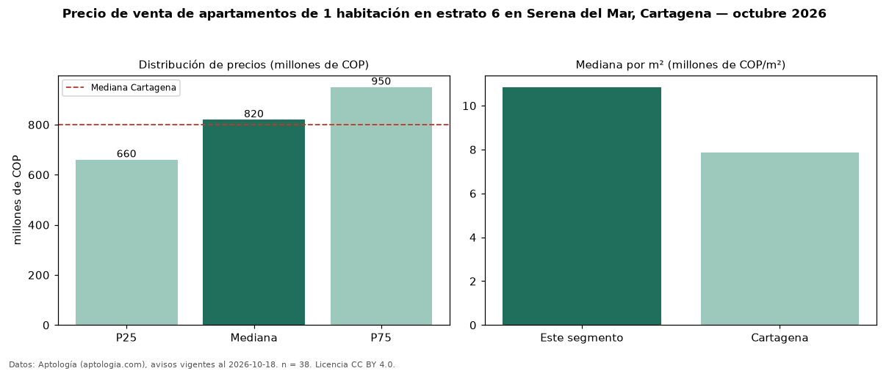

Precio de venta de apartamentos de 1 habitación en estrato 6 en Serena del Mar, Cartagena — octubre 2026
COP 820 millones es el precio mediano de apartamentos de 1 habitación en estrato 6 en venta en Serena del Mar, Cartagena (n = 38 avisos). Frente a la mediana de los apartamentos en estrato 6 en venta de Serena del Mar (COP 992 millones, n = 162), queda 17 % por debajo; este segmento reúne el 23 % de esos avisos. Por metro cuadrado, la mediana es COP 10,85 millones/m² (n = 36), 2 % por encima de los apartamentos en estrato 6 en venta de Serena del Mar (COP 10,63 millones/m²). El área mediana anunciada es 73 m². La administración mediana declarada es COP 600.000 al mes (n = 21). La mediana de todos los apartamentos en venta de Cartagena es COP 800 millones (+2 % de diferencia). 95 % de los avisos con el dato declara parqueadero. La mitad central de los avisos va de COP 660 millones a COP 950 millones (razón 1,4), una dispersión moderada. Datos: Aptología (aptologia.com), CC BY 4.0 — https://www.aptologia.com/venta/cartagena/serena-del-mar. Archivos: PDF, CSV con las cifras y gráfica PNG.

| Avisos únicos | 38 |
|---|---|
| Percentil 25 | COP 660.405.000 |
| Mediana | COP 820.000.000 |
| Percentil 75 | COP 950.000.000 |
| Mediana por m² | COP 10.847.338 |
Fuente: avisos vigentes de portales inmobiliarios recopilados por Aptología, deduplicados (mínimo 30 avisos únicos por celda). Precios pedidos, no cerrados. Fecha: 2026-10-18.